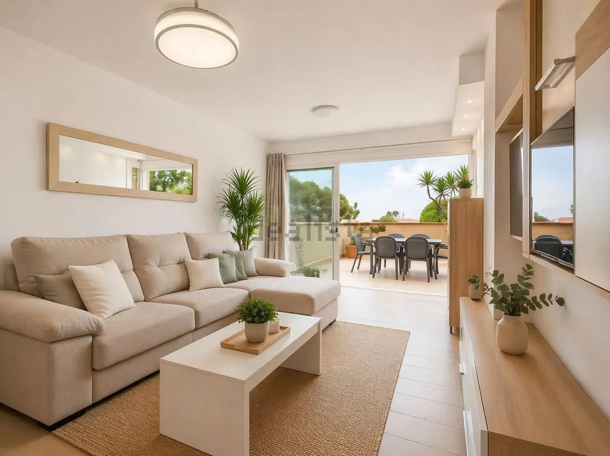
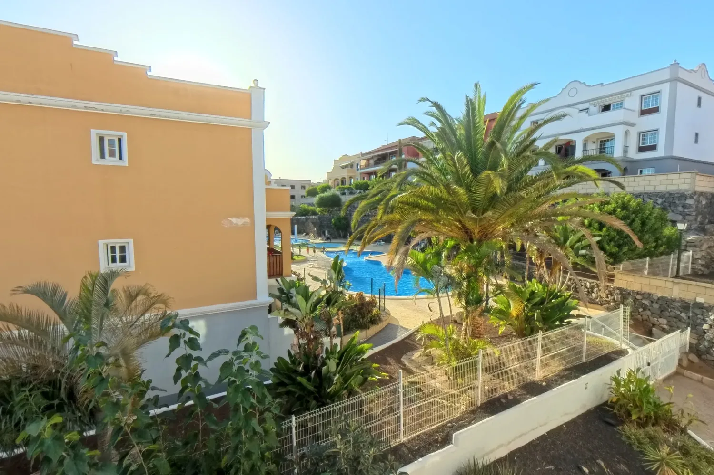
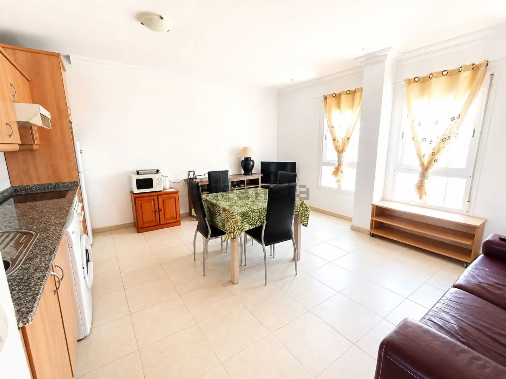
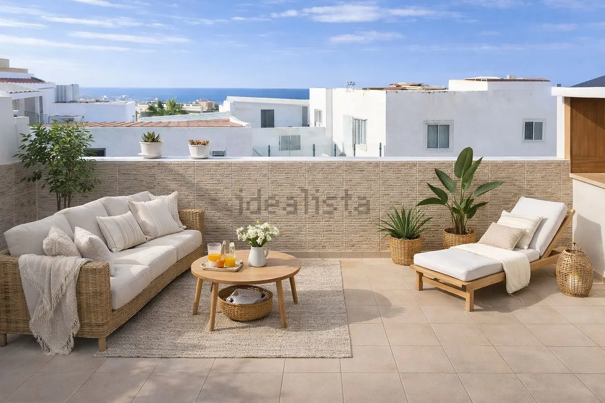
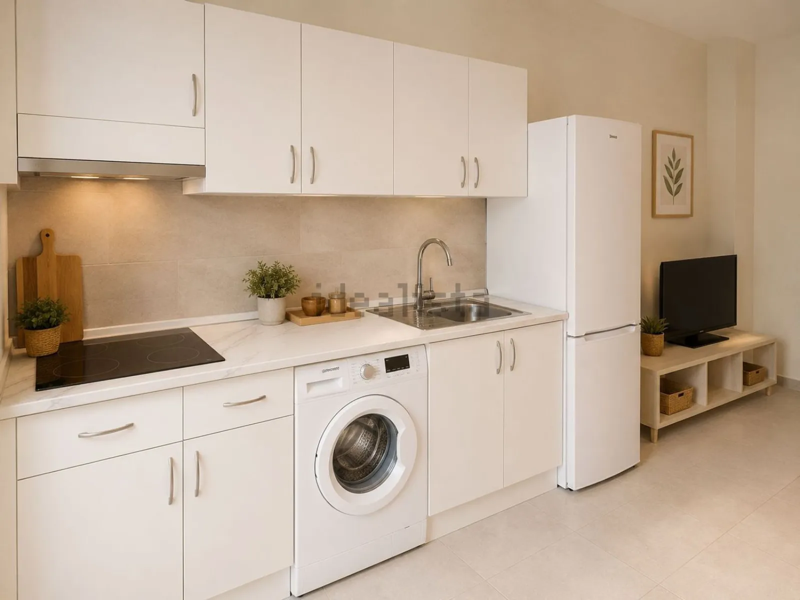
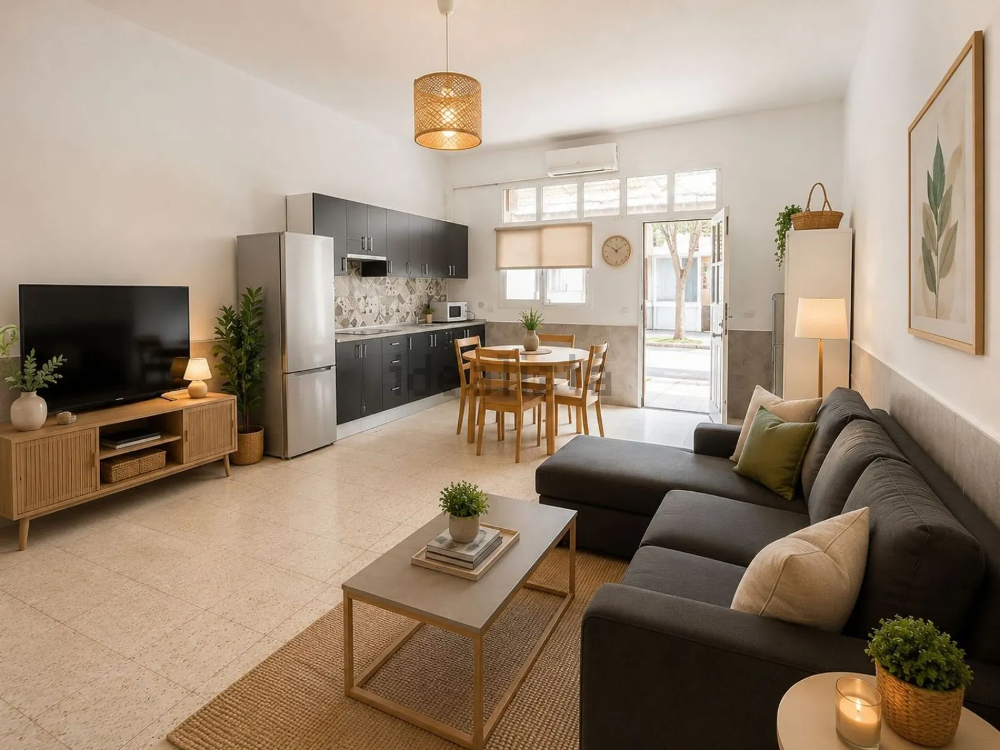

IN DIESEM MOMENT · TENERIFFA SÜD
So sieht es jetzt aus
an den Stränden im Süden.
Vierzehn öffentliche Webcams, von Los Gigantes bis El Médano. Jedes Bild wird alle zwei Minuten erneuert: Laden Sie die Seite neu, um das aktuelle Bild zu sehen, oder klicken Sie auf eine Kamera für das Live-Video.
Costa Adeje


Arona


Granadilla de Abona


Guía de Isora · Santiago del Teide


Bilder von SkylineWebcams. Ein Klick auf ein Bild führt Sie auf deren Website.
Das Klima in Zahlen
Kein zufällig
schöner Tag.
21,7 °Cmittlere Höchsttemperatur im Januar
15,2 °Cmittlere Tiefsttemperatur im Januar
2.725Sonnenstunden pro Jahr
15Regentage pro Jahr
Quelle: AEMET, Wetterstation Tenerife Sur Aeropuerto, Normalwerte 1981-2010.
Hier wohnen
Immobilien zum Kauf
in der Nähe dieser Strände.
Gefällt Ihnen, was Sie sehen? Schauen Sie, was im Süden zum Verkauf steht. Wir antworten Ihnen schriftlich auf Deutsch.

Torviscas Centro y Alto · Adeje · TenerifeRenovierte 2-Zimmer-Wohnung mit 15 m² Terrasse und Poolblick – Costa Adeje, Teneriffa395.000 €
Las Chafiras · San Miguel de Abona · TenerifeDachgeschosswohnung mit 3 Schlafzimmern, Terrasse und Poolblick – Teneriffa Süd299.000 €
Los Abrigos · Granadilla de Abona · TenerifeHelle 2-Zimmer-Wohnung nahe der Strandpromenade – Los Abrigos, Teneriffa189.000 €
Casco Urbano · Adeje · TenerifeWohnung mit 15 m² Terrasse und Meerblick – Altstadt von Adeje, Teneriffa165.000 €
El Fraile · Arona · TenerifeLoft-Wohnung mit 2 Schlafzimmern im Erdgeschoss – El Fraile, Teneriffa Süd135.000 €
El Fraile · Arona · TenerifeLoft-Wohnung mit 1 Schlafzimmer, bezugsfertig – El Fraile, Teneriffa Süd129.000 €